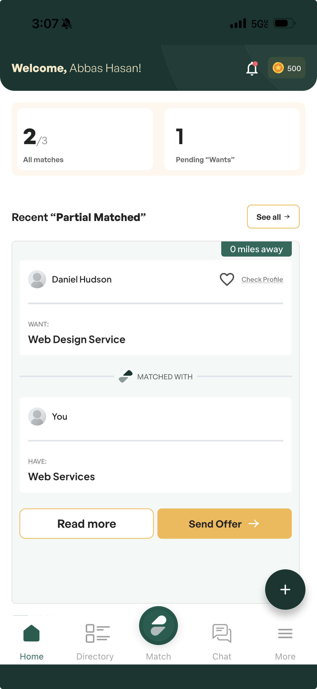
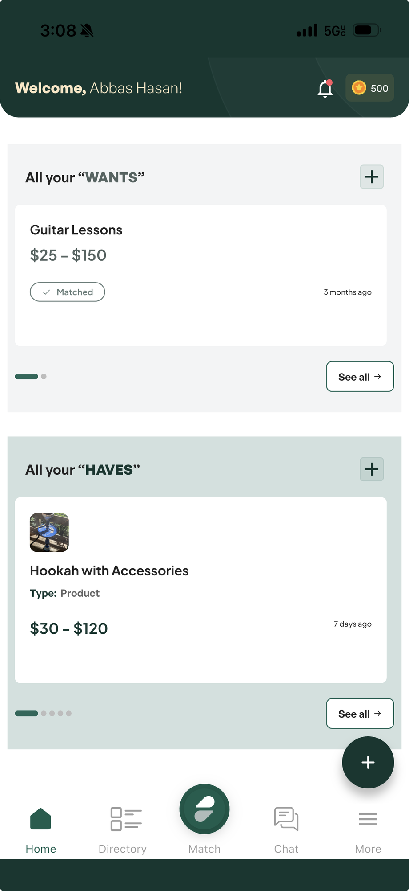

Header area, stats cards, greeting text, coins badge, and notification bell.

1 2 3 4 5 6 7There's a visible line between the system status bar and the app header — the two greens don't match. Ensure the status bar background uses the same #2D4A3E brand color.
Greeting text is redundant — the user knows who they are. Removing it frees up header space and feels less cluttered. Consider a simple "Home" title or just the logo.
Points system is not functional yet. Showing it sets an expectation that isn't met. Hide until the feature is ready to launch.
Keep the bell icon but replace the red dot with a numeric badge (e.g. "3") so users know how many unread notifications they have at a glance.
Drop "All" — it's redundant. Remove the "/3" fraction format and just show the count ("2"). Center-align the number and label within the card.
Simplify the label. Just show the number, centered within the card — same treatment as the matches card.
The current cream/yellow background for the stats section feels disconnected from the brand. Change it to #2D4A3E (same dark green as header/footer) and keep the cards white for contrast.
This section (visible when scrolling down) takes up a lot of space with a single match card showing distance, profiles, wants/haves detail, "Read more" and "Send Offer" buttons. It's too much for the home screen — matches belong on the dedicated Match tab. Remove this section to keep the home page focused.
Wants & Haves sections, card layout, and information density.

8 9 10 11 12The current "All your 'WANTS'" label with quotes feels awkward and overly literal. Use friendlier, more natural language — something like "What You're Seeking" or "Your Requests". Drop the quotes and "All your" phrasing.
Same treatment as Wants — replace "All your 'HAVES'" with something natural like "What You're Offering" or "Your Services". Keep the language consistent between the two sections.
The cards currently show too much: price range, type, time ago, matched status all at once. Simplify each card to just the title (e.g. "Guitar Lessons") and a match indicator (matched/unmatched badge). Price, type, and other details should only appear when the user taps "See all" to go into the detail view.
Currently only one card is visible at a time in a vertical stack. Switch to a horizontal scrollable grid that shows ~3 compact cards side by side. This lets users see more items at a glance and feels more modern. Each card should be a small tile — title + match badge only.
The muted sage/green tinted backgrounds on the Wants and Haves sections feel disconnected from the rest of the app's styling. Noted for a future design pass — not a priority for this round, but flag for PJ.